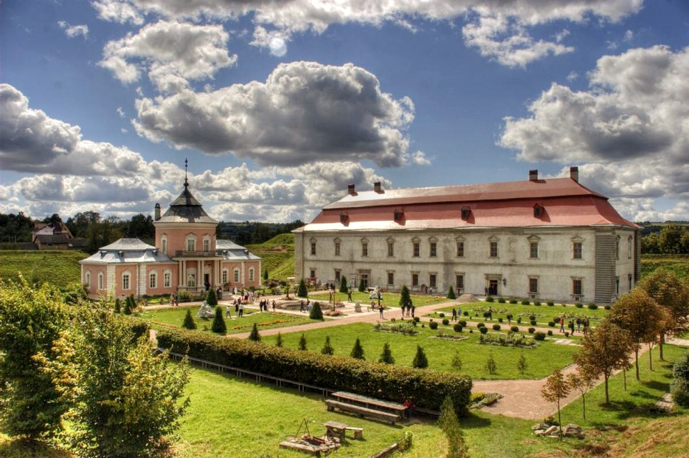

Мушкетерський замок
Свірзький замок стоїть у Перемишлянському районі з XV століття. 1427 рік – перша письмова згадка про нього, хоча, можливо, збудований і раніше. Коли він перейшов у власність шляхтичів Свірзьких, вони його красиво оздобили, і з їхніх часів зберігся над входом викарбуваний рік 1530. Ренесансної вишуканості замку надав наступний власник Цетнер. Він замовив архітектора, який будував у Львові королівський арсенал, для оздоблення замку у Свіржі. Останній із спадкоємців-власників свірзької твердині був ботаніком, який заснував ботанічний сад у Львові і його ім’ям названо мікрорайон у Львові Цетнерівка.
Замок у Свіржі вистояв навали татар, козаків, турків та інших окупантів. Зараз він належить Спілці архітекторів України, яка займається його відновленням та промоцією.
Тут збереглися розкішні портали, ліпнина, скульптура грифона над вікном, різьблені сходи, оригінальний камін всередині та колодязь у внутрішньому дворі, який напував його мешканців у часи облог. Під землею є величезні льохи з могутніми склепіннями. До головного входу через рів перекинутий міст, колись він був підвісним. Замок збудували над ставком, звідки видніється красива панорама, особливо при заході сонця.
Біла пані з Підгорецького замку
У Підгірцях на Бродівщині розташований чи на найкрасивіший замок Львівщини, що радше схожий на палац з оборонними елементами. Тут також знімали окремі сцени фільму про д’Артаньяна і тут теж є привид жінки.
Легенда про мару білої пані, яка стогне і ввижається сторожам і навіть відвідувачам, докотилася до американського проекту «Мисливці за привидами» і вони приїжджали знімати тут свою програму. Їхнє обладнання наче зафіксувало аномальні звуки і зображення. А привид, за легендою, належить молодій дружині Жевуського, який у ревнощах живцем замурував її у стінах замку. Відтоді її дух у білому вбранні блукає покоями і просить віднайти останки і по-християнськи поховати.
Розкішний замок у Підгірцях збудував у XVII столітті італійський архітектор Андреа дель Аква. Зміцнив його велич бастіонними укріпленнями французький інженер Гійом де Боплан. Колись у розкішному палаці всі кімнати були поділені тематично і за кольорами – золота, зелена, мозаїчна, кармазинова зали. Вражають оригінальні портали з мармуру, що досі збереглися.
Час від часу у замку влаштовують виставки та концерти, але зазвичай його приміщення зачинені і волають про порятунок. Тим часом відвідувачі мають нагоду милуватися красивою спорудою замку, прогулюватися терасами і довколишньою територією, а також милуватися панорамами, які сягають аж до Пліснеського літописного городища.
Княжий замок в Олеську
Один з найдавніших, ще з княжих часів Олеський замок стоїть і в наш час. Гордо возвеличуючись на пагорбі, твердиня видніється ще з траси Київ-Чоп.
Перша згадка про замок сягає 1327 року, його збудував син галицько-волинського князя Юрія І Львовича. За нього часто боролися, нападали, атакували, тому неприступна фортеця, хоч і вистояла, проте зазнала суттєвих перебудов. У часи володарювання польської шляхти йому надали ренесансного шарму, перетворивши на палац для вельмож з архітектурними прикрасами і ліпленням.
В Олеському замку народився майбутній король Речі Посполитої Ян III Собеський. Як твердить легенда, в час його народження гримнув грім і мармуровий стіл, на який поклали немовля, тріснув, а повитуха оглухла. Це був знак, що на світ прийшла неабияка людина.
Замок має два крила, які об’єднує в’їзна брама. Всередині є внутрішній дворик з криницею. А навпроти входу можна піднятися на галерею, звідки видно панораму околиць. Він також був знімальним майданчиком для десятка кінофільмів.
Китайський палац у Золочівському замку
Ще один маєток Собеських стоїть у райцентрі Золочів на тернопільській трасі. Туристи, які вперше приїжджають туди, думають, що палацом є китайський павільйон, який стоїть якраз навпроти входу. Однак це додаткова оздоблювальна споруда, а сам житловий двоповерховий замок стоїть поруч. У ньому розташована музейна експозиція, адже він теж є частиною Львівської галереї мистецтв. Збереглися тут окремі портали, потайний хід, туалети XVIII століття та первісна система каналізації.
Золочівський замок збудував у XVII столітті батько того ж Яна III Собеського, майбутнього короля Речі Посполитої, як оборонну фортецю, тому він зміцнений могутніми валами, равеліном і бастіонами. Спереду – рів, через який перекинутий міст, і в’їзна брама. Вишуканого шарму додав замку власне король, збудувавши для своєї дружини Китайський палацик. Там зараз Музей східних культур.
Ще за панування Австрії у Золочівському замку була в’язниця, а в радянські часи тут квартирував НКВС, який облаштував у підвалах катівню. Сторожі часто чують дивні звуки і наче стогони з підземель. В пам’ять про замордованих жертв в сучасні часи біля замку спорудили капличку авторства скульпторки Теодозії Бриж.
У 2016 році у підземеллях замку облаштували виставку фрагментів львівських кам’яниць XV-XVI століть, скульптур та давніх ліхтарів.